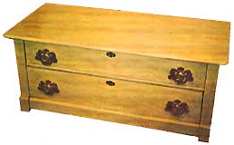

Should you acquire an old dresser with ornate cast-iron handles that beg not to be replaced, don't-whatever you do-throw away the ancient pulls just because one of their mates is broken or missing. Check around at antique shops first, and if that doesn't turn up a suitable replacement (it probably won't), consider casting your own. It's not as hard to do as you might think.
First find a small, flat container that's just large enough to hold one of your undamaged handles.
Second, buy some water putty at a hardware store (just ask for it . . . they'll know what you want) and-following the directions on the box-mix enough putty to support (not immerse) one of the good pulls in the little flat container.
Now apply a thin coat of oil to an undamaged pull (so that it won't stick later on), place it face down in the putty, and go away for a while.
After the putty has dried completely, very carefully remove the pull (use a pointed instrument if you have to to help you pry the handle from the mold). Try not to damage the hardened putty.
Next-with the aid of a propane torch-heat a small quantity of white metal (which you can get at any auto-wrecking establishment) in a metal crucible spoon (usually obtainable from a plumbing supply house). Once the white metal has melted, carefully pour it into the water-putty mold, and allow it to cool. Finally, break the putty from the casting.
At this point, all you have to do is [1] file off any rough edges which the new pull might have and [2] spray paint all the handles to match each other . . . and you've got a good-as-new set of drawer pulls!
|
 |
|
|